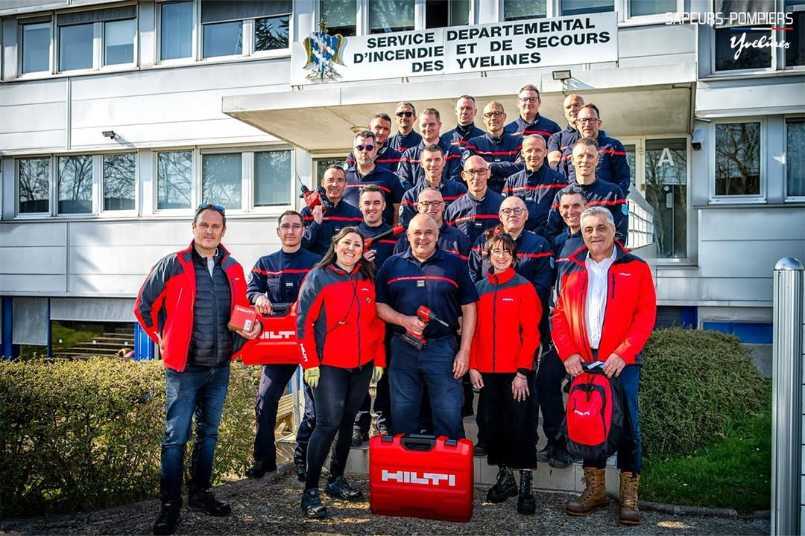
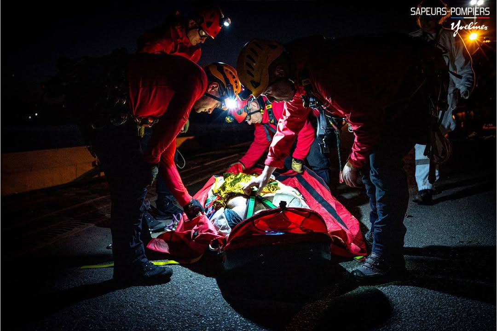
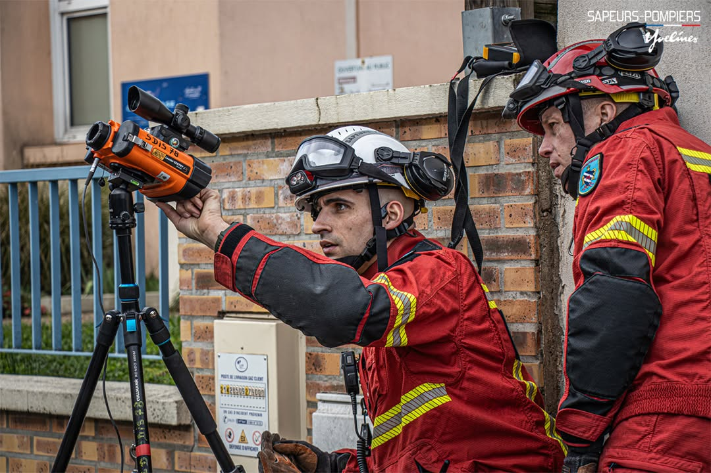

Soutien aux pompiers
Accompagnement et defense des interets des sapeurs-pompiers.
L'UDSP 31 accompagne les sapeurs-pompiers et propose des services de formation, prevention et securite pour le grand public, les entreprises et les collectivites.
L'UDSP 31 agit au quotidien pour soutenir les sapeurs-pompiers et servir la population.
Accompagnement et defense des interets des sapeurs-pompiers.
Sensibilisation du public et formation aux gestes qui sauvent.
Nous formons les JSP a l'engagement, a l'esprit d'equipe et aux gestes de premiers secours.
Nous organisons des DPS adaptes a vos evenements pour assurer la prevention, la securite du public et la coordination des secours.
Suivez nos dernieres nouvelles.

FormationInscrivez-vous des maintenant a notre prochaine session PSC1 destinee au grand public et aux entreprises.
Lire la suite
EvenementRetour sur l'assemblee generale annuelle qui a reuni plus de 200 participants autour des enjeux de demain.
Lire la suite
JSPVenez decouvrir les sections de Jeunes Sapeurs-Pompiers lors de notre journee portes ouvertes.
Lire la suiteTrouvez rapidement ce que vous cherchez.
L'Union Departementale des Sapeurs-Pompiers de Haute-Garonne est une association qui oeuvre depuis plus de 100 ans pour defendre les interets des sapeurs-pompiers, promouvoir leurs valeurs et accompagner les acteurs de la securite civile.
Soutien aux sapeurs-pompiers et a leurs familles.
Formation de qualite et innovation constante.
Au coeur de nos actions, l'humain avant tout.

Ils nous font confiance.